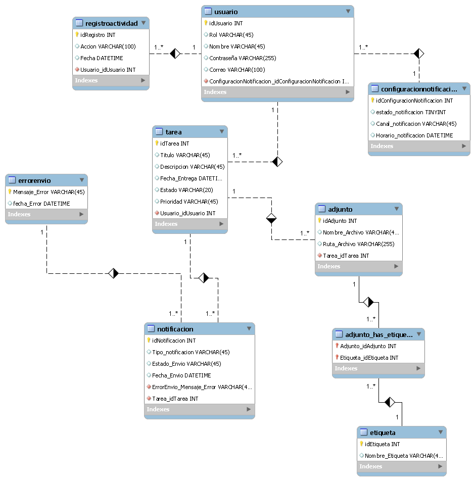

Modelo del Sistema
Modelo Conceptual
Presentación de Diagramas de ER y Lógicos Relacionales para TaskEDu.
Diagrama Entidad Relación
Diagrama Logico Relacional

Diagramas de Dominio
A continuación se presentan los diagramas de dominio relacionados con el sistema TaskMaster:
Registro de Usuarios
Gestión de Tareas
Notificaciones
Diagramas de Actividades
Estos diagramas muestran el flujo de actividades dentro de la aplicación:
Registro de Usuarios
Notificaciones

Gestión de Tareas
Glosario de Conceptos UML
- Actor: Representa un rol externo que interactúa con el sistema.
- Caso de uso: Describe una funcionalidad específica del sistema.
- Clase: Molde que define atributos y comportamientos de objetos.
- Objeto: Instancia concreta de una clase.
- Atributo: Propiedad o característica de una clase.
- Método: Acción o comportamiento de una clase.
- Relación: Conexión entre elementos UML.
- Herencia: Mecanismo donde una clase hija hereda de una clase padre.
- Asociación: Relación entre dos clases que colaboran entre sí.
- Agregación: Relación "tiene un", donde una clase contiene a otra sin dependencia total.
- Composición: Relación fuerte de contención; si el contenedor se elimina, también sus componentes.
- Dependencia: Relación débil donde una clase usa otra temporalmente.
- Interfaz: Conjunto de métodos sin implementación que una clase puede implementar.
- Diagrama de clases: Representa las clases del sistema y sus relaciones.
- Diagrama de casos de uso: Muestra los actores y sus interacciones con el sistema.
- Diagrama de actividades: Representa flujos de trabajo o procesos paso a paso.
- Estado: Condición actual de un objeto en el tiempo.
- Diagrama de estados: Muestra los estados posibles de un objeto y sus transiciones.
- Secuencia: Orden cronológico de interacciones entre objetos.
- Diagrama de secuencia: Representa la interacción entre objetos en el tiempo.
- Mensaje: Comunicación entre objetos o clases.
- Evento: Suceso que provoca un cambio de estado o transición.
- Nodo: Elemento físico en diagramas de despliegue.
- Componente: Parte modular del sistema que realiza una función específica.
- Diagrama de componentes: Muestra cómo se organizan e interconectan los componentes.
- Diagrama de despliegue: Representa la arquitectura física del sistema.
- Multiplicidad: Cantidad de instancias en una relación entre clases.
- Paquete: Agrupación lógica de elementos UML.
- Iteración: Repetición de una actividad o proceso en un flujo.
- Punto de decisión: Nodo que representa una bifurcación en el flujo de actividades.